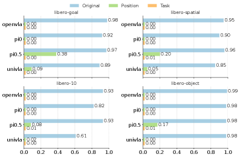
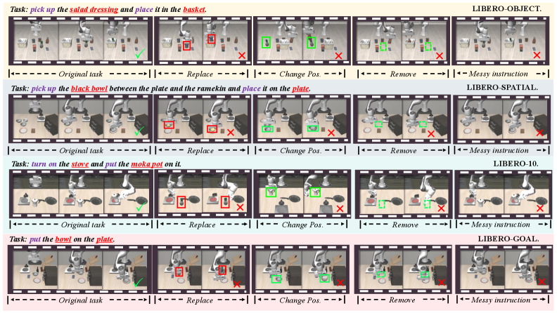
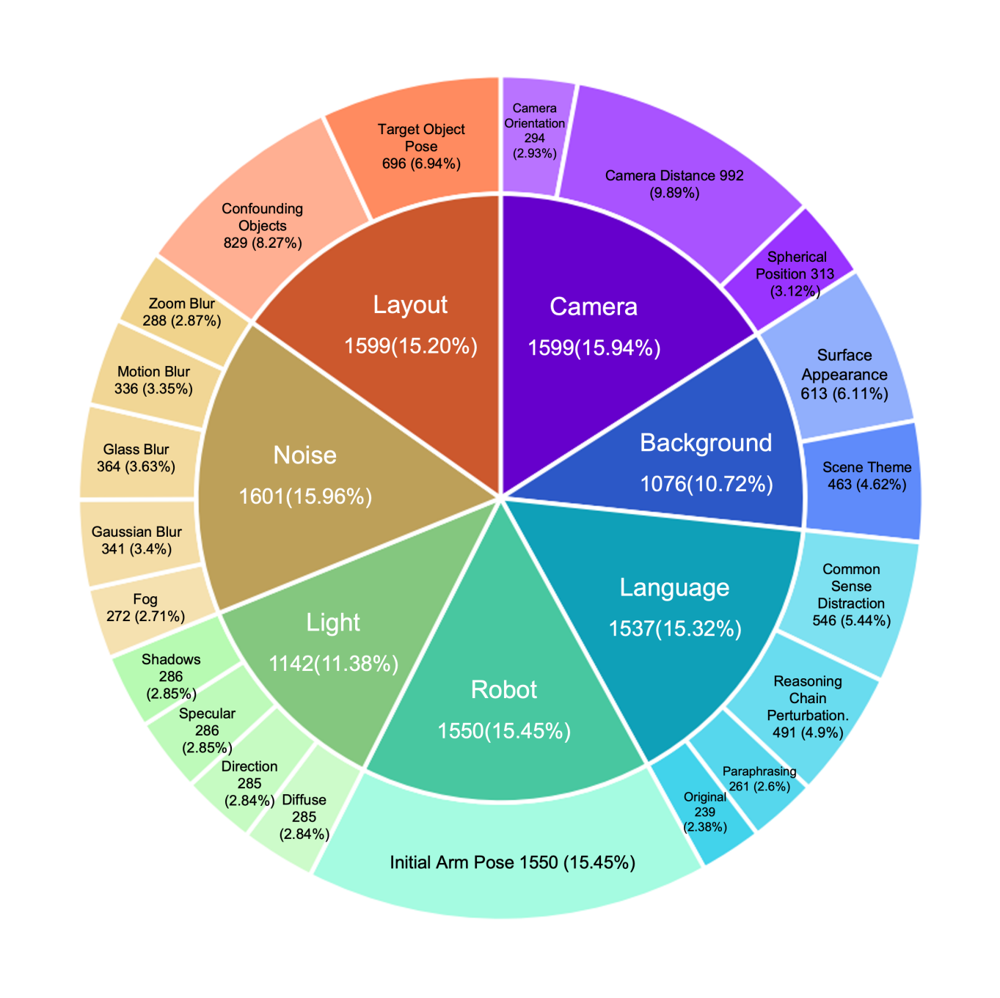

LIBERO Explained: Why 95% Accuracy Means Your Robot Learned Nothing
State-of-the-art robot policies score 95%+ on LIBERO. Impressive, right?
Move the target object 2 centimeters. Success drops to 0%.
This isn’t cherry-picked. It’s the systematic finding from two papers that exposed what “95%+ accuracy” actually means: your model memorized the training trajectories. It learned nothing about manipulation.

LIBERO (NeurIPS 2023)\(^{[1]}\) is a benchmark for lifelong robot learning with 130 tasks. Two follow-up papers exposed critical flaws:
- LIBERO-PRO\(^{[2]}\): Models scoring 95%+ drop to 0% under tiny perturbations
- LIBERO-Plus\(^{[3]}\): Systematic testing across 7 robustness dimensions reveals models ignore language instructions entirely
- The problem: Current VLA models memorize trajectories, they don’t understand tasks
Why LIBERO Matters
Before LIBERO, robot learning benchmarks like Meta-World focused on multi-task learning — can one policy solve 50 different tasks? But real robots face a harder problem: lifelong learning. They need to learn new tasks without forgetting old ones, and transfer knowledge across tasks.
LIBERO (Liu et al., NeurIPS 2023)\(^{[1]}\) was designed specifically to study this. The key insight: robot manipulation requires transferring two types of knowledge:
- Declarative knowledge: What things are — object identities, spatial relationships, scene layouts
- Procedural knowledge: How to do things — grasping motions, pushing behaviors, manipulation primitives
Traditional lifelong learning in vision/NLP mainly tests declarative transfer. Robots need both.
The LIBERO Benchmark
LIBERO contains 130 language-conditioned manipulation tasks using a Franka Panda arm in MuJoCo simulation. Each task comes with 50 human-teleoperated demonstrations. The tasks are organized into four suites that isolate different types of distribution shift:
| Suite | Tasks | What Changes | Tests |
|---|---|---|---|
| LIBERO-Spatial | 10 | Object positions | Spatial declarative knowledge |
| LIBERO-Object | 10 | Object types | Object declarative knowledge |
| LIBERO-Goal | 10 | Task objectives | Procedural knowledge |
| LIBERO-100 | 100 | Everything | Entangled transfer |
This decomposition is LIBERO’s main contribution. Instead of lumping all variations together, you can diagnose which type of knowledge transfer is failing.
Example Tasks
Consider LIBERO-Spatial: all 10 tasks might involve “pick up the red cube and place it in the bowl.” But the cube starts in different positions — left corner, center, right edge. A policy that truly understands spatial relationships should generalize. One that memorized specific trajectories will fail.
The Lifelong Learning Protocol
LIBERO tests agents on sequential task learning:
- Train on Task 1
- Train on Task 2 (without access to Task 1 data)
- … continue for N tasks
- Evaluate on all tasks
Key metrics:
- Forward Transfer (FWT): Does learning Task 1 help with Task 2?
- Negative Backward Transfer (NBT): Does learning Task 2 hurt Task 1 performance?
In the original LIBERO paper, naive sequential finetuning outperformed specialized lifelong learning methods (EWC, PackNet, Experience Replay) on forward transfer. Methods designed to prevent forgetting often hurt learning quality.
The 95% Illusion
Fast forward to 2024. Vision-Language-Action (VLA) models like OpenVLA and Pi0 report 95%+ success rates on LIBERO. Problem solved?
Not quite. Two papers — LIBERO-PRO\(^{[2]}\) and LIBERO-Plus\(^{[3]}\) — independently discovered the same disturbing pattern: these scores are meaningless.
LIBERO-PRO: The Memorization Exposé
LIBERO-PRO (Zhou et al., 2024)\(^{[2]}\) tested what happens under minimal perturbations:

| Model | Standard LIBERO | With Perturbations |
|---|---|---|
| OpenVLA | 98% | 0% |
| Pi0 | 92% | 0% |
| UniVLA | 89% | 0% |
The perturbations weren’t extreme — just repositioning objects slightly or rephrasing instructions. The complete collapse reveals that models memorized action sequences rather than learning task structure.
Three Damning Experiments

Experiment 1: Object Replacement
Replace the target object (e.g., red cube) with an irrelevant object (e.g., banana). The model should recognize “there’s no red cube” and fail gracefully. Instead, models executed identical grasping trajectories — reaching for empty space where the cube used to be (Figure 3).
Experiment 2: Instruction Corruption
Feed the model corrupted language instructions — random tokens, gibberish, or completely different task descriptions. Performance was unchanged. Models ignore the language channel entirely.
Experiment 3: Position Displacement
Move the target object by 0.2 units (a few centimeters). Performance collapsed from 98% to near 0%. Models memorized positions, not object identities.
VLA models function as Vision-Action models, not Vision-Language-Action models. The “Language” component is decorative. They’re executing memorized trajectories conditioned on visual patterns, not understanding task semantics.
LIBERO-Plus: Systematic Robustness Testing
LIBERO-Plus (OpenMOSS, 2024)\(^{[3]}\) went further, creating a comprehensive robustness framework with 10,030 tasks testing 7 dimensions and 21 sub-dimensions of perturbation:

The Seven Dimensions
- Object Layout (2 sub-dims): Distractor objects, target pose changes
- Camera Viewpoints (3 sub-dims): Distance, angle, orientation
- Robot Initial States (1 sub-dim): Joint angle perturbations
- Language Instructions (3 sub-dims): Rephrasing, reasoning chains, distractors
- Lighting (4 sub-dims): Color, direction, specular, shadows
- Background (2 sub-dims): Textures, scene themes
- Sensor Noise (5 sub-dims): Motion blur, Gaussian blur, fog, etc.
Difficulty Levels (L1-L5)
Tasks are stratified by how many baseline models succeed:
- L1: All 4 reference models succeed (easiest)
- L5: No models succeed (hardest)
This lets you pinpoint exactly where models fail — not just “it doesn’t work” but “it fails specifically on camera viewpoint changes of >30 degrees.”
Key Findings
| Perturbation Type | Baseline | After Perturbation | Drop |
|---|---|---|---|
| Camera viewpoint | ~95% | 0.3% - 16.8% | -78 to -95% |
| Robot initial state | ~95% | 4.1% - 30% | -65 to -96% |
| Language variations | ~95% | ~73% | -22% |
| Lighting changes | ~95% | 30-60% | -30 to -60% |
Notice that language variations cause the smallest drop. This confirms the LIBERO-PRO finding: models barely use language anyway, so corrupting it doesn’t matter much.
Models with wrist-mounted cameras showed significantly better robustness (+37 percentage points on viewpoint changes). First-person views provide more stable reference frames than third-person observations alone.
“High LIBERO scores = ready for real robots” — No. LIBERO is simulation-only. Even robust LIBERO performance doesn’t guarantee sim-to-real transfer.
“LIBERO-PRO/Plus made LIBERO obsolete” — No. Standard LIBERO is still useful for comparing methods under controlled conditions. PRO/Plus add robustness testing, they don’t replace the original.
“The memorization problem is unique to VLAs” — No. Smaller policies (Diffusion Policy, ACT) can also memorize. VLAs just made it more visible because they’re evaluated more broadly.
What This Means for Your Research
If You’re Evaluating Models
Don’t trust standard benchmark numbers. A model scoring 95% on LIBERO tells you almost nothing about real-world capability. At minimum:
- Test with object repositioning (even small displacements)
- Test with instruction paraphrasing
- Test with camera viewpoint variations
LIBERO-PRO and LIBERO-Plus provide ready-made evaluation suites for this.
If You’re Building Models
The failure modes point to architectural gaps:
- No geometric understanding: Models fail on viewpoint/position changes because they lack 3D scene representations
- No language grounding: The vision-language fusion is broken — language features aren’t actually conditioning behavior
- No compositional generalization: Combined perturbations cause worse-than-additive failures, suggesting entangled representations
If You’re Writing Papers
Be honest about limitations. Report performance under perturbations, not just standard test sets. The field needs to stop celebrating memorization as intelligence.
The Path Forward
The LIBERO suite (original + PRO + Plus) provides a template for rigorous evaluation:
- Isolate failure modes: Test each type of generalization separately before mixing them
- Use controlled perturbations: Systematic variation beats random noise
- Report robustness alongside accuracy: A model that’s 80% accurate but robust beats one that’s 95% accurate but brittle
Current VLA models are impressive demonstrations of scaling. They’re not yet intelligent manipulation systems. LIBERO-PRO and LIBERO-Plus give us the tools to measure the gap.
LIBERO exposed that lifelong robot learning is harder than expected. LIBERO-PRO and LIBERO-Plus exposed that our “solutions” were mostly memorization. The 95% accuracy numbers were an illusion — shift anything slightly, and models fail completely.
This is actually good news. We now have precise diagnostics for what’s broken: geometric reasoning, language grounding, compositional generalization. The next generation of robot policies needs to address these specifically, not just scale up on benchmark-matched data.
References
Liu, B., Zhu, Y., Gao, C., Feng, Y., Liu, Q., Zhu, Y., & Stone, P. (2023). LIBERO: Benchmarking Knowledge Transfer for Lifelong Robot Learning. NeurIPS 2023.
Zhou, X., Xu, Y., Tie, G., Chen, Y., Zhang, G., Chu, D., Zhou, P., & Sun, L. (2024). LIBERO-PRO: Towards Robust and Fair Evaluation of Vision-Language-Action Models Beyond Memorization. arXiv preprint.
OpenMOSS. (2024). LIBERO-Plus: In-depth Robustness Analysis of Vision-Language-Action Models. arXiv preprint.
Yu, T., Quillen, D., He, Z., Julian, R., Hausman, K., Finn, C., & Levine, S. (2020). Meta-World: A Benchmark and Evaluation for Multi-Task and Meta Reinforcement Learning. CoRL 2020.
Code & Resources: